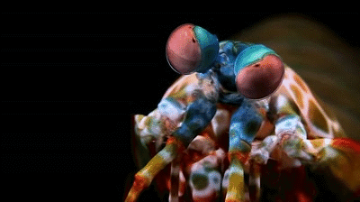
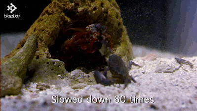

Fatos sobre o Stomatopoda
O que e?

Stomatopoda ou estomatópode (Odontodactylus scyllarus), tambem conhecidos como tamarutacas ou lacraias-do-mar no Brasil, sao seres marinhos da familia dos Crustaceos Hoplocarida e sua aparencia lembra a de um Louva-Deus (Camarao-Louva-Deus?). Vivem proximo a areas arenosas onde conseguem cavar buracos ou utilizam orificios ja existentes para utilizarem com moradia.
Capacidade ocular
Seus olhos contem receptores capazes de identificar 12 tipos de cores primarias, diferente dos olhos humanos, que possuem a capacidade de identificar apenas 3.
Predador Implacavel
Os estomatopode sao carnivoros que se alimentam de camaroes, moluscos, caranguejos e ate mesmo de seus semelhantes. Possuem um par de patas muito desenvolvidas utilizadas tanto para se defender quanto atacar podendo em algumas especies a velocidade do ataque chegar a 720km/h com a forca de 60kg/cm2.
Veja Mais
Segue o video Mantis Shrimp Packs a Punch | Predator in Paradise do canal Nat Geo Wild no Youtube apresentando com detalhes esse animal facinante!